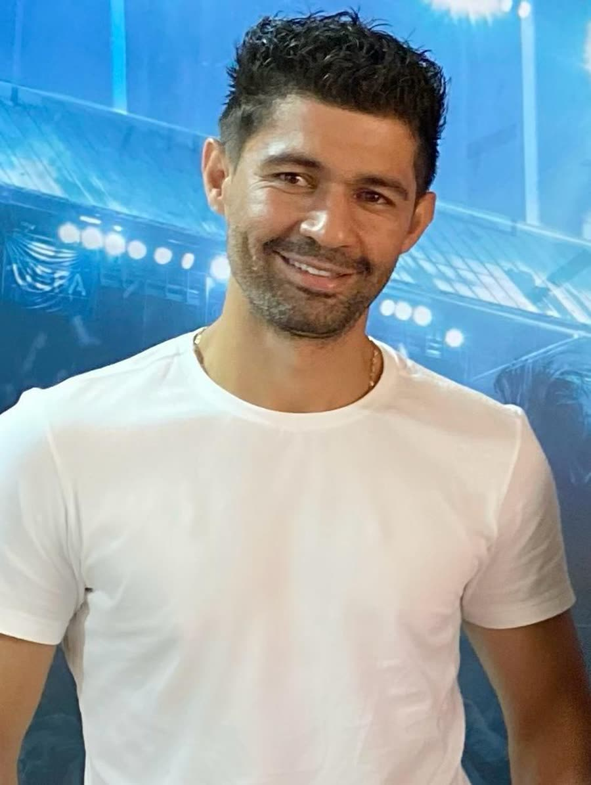

CEO · Fundador
André Soares
Empresário há mais de 14 anos, fundou a AK Sports Management em 2022: consultoria esportiva especializada na gestão de carreira de atletas de alto nível, com visão estratégica e compromisso com o sucesso de quem representa.
14+ anos de mercadoParceria VictrixElenco Sports